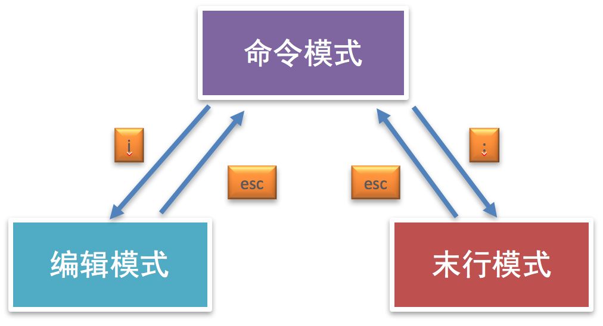

<!DOCTYPE lake>
<h2 data-lake-id="FEMTQ" id="FEMTQ"><span data-lake-id="uc489b140" id="uc489b140" style="color: rgb(51, 51, 51)">1. vim 的介绍</span></h2><p data-lake-id="u3c49fcc5" id="u3c49fcc5"><span class="lake-fontsize-12" data-lake-id="u1975db6b" id="u1975db6b" style="color: rgb(51, 51, 51)">vim 是一款功能强大的文本编辑器，也是早年 Vi 编辑器的加强版，它的最大特色就是使用命令进行编辑，完全脱离了鼠标的操作。</span></p><p data-lake-id="u3313d117" id="u3313d117"><span class="lake-fontsize-12" data-lake-id="uf79d4552" id="uf79d4552" style="color: rgb(51, 51, 51)">ubuntu不自带vim,需要手动安装</span></p><span class="yuque-card-unsupported">[codeblock]</span><p data-lake-id="ud9aa8c54" id="ud9aa8c54"><span data-lake-id="u0c1fc4e8" id="u0c1fc4e8">​</span><br/></p><h2 data-lake-id="pI4ig" id="pI4ig"><span data-lake-id="u539d6a8f" id="u539d6a8f" style="color: rgb(51, 51, 51)">2. vim 的工作模式</span></h2><ul list="u4fe6ea1d"><li data-lake-id="uf2ef737d" fid="u23be58d1" id="uf2ef737d"><span class="lake-fontsize-12" data-lake-id="u363f7dd0" id="u363f7dd0" style="color: rgb(51, 51, 51)">命令模式 (一般模式)</span></li><li data-lake-id="ue3bca35e" fid="u23be58d1" id="ue3bca35e"><span class="lake-fontsize-12" data-lake-id="u36bea2d1" id="u36bea2d1" style="color: rgb(51, 51, 51)">编辑模式</span></li><li data-lake-id="u26cd0a0f" fid="u23be58d1" id="u26cd0a0f"><span class="lake-fontsize-12" data-lake-id="ue2882753" id="ue2882753" style="color: rgb(51, 51, 51)">末行模式</span></li></ul><p data-lake-id="uf691f72a" id="uf691f72a"><strong><span class="lake-fontsize-12" data-lake-id="u51c4f0b2" id="u51c4f0b2" style="color: rgb(51, 51, 51)">说明:</span></strong></p><p data-lake-id="u599377a5" id="u599377a5"><span class="lake-fontsize-12" data-lake-id="u1ba64393" id="u1ba64393" style="color: rgb(51, 51, 51)">vim 打开文件进入的是命令模式</span></p><ul list="ue5fad4d7"><li data-lake-id="u2438b7ef" fid="u1483b968" id="u2438b7ef"><code data-lake-id="u7b02cb3e" id="u7b02cb3e"><span class="lake-fontsize-12" data-lake-id="uf5629343" id="uf5629343" style="color: rgb(51, 51, 51)">vim aa.txt</span></code><span class="lake-fontsize-12" data-lake-id="u2566868a" id="u2566868a" style="color: rgb(51, 51, 51)">  进入</span><strong><span class="lake-fontsize-12" data-lake-id="ud92cd491" id="ud92cd491" style="color: rgb(51, 51, 51)">命令模式</span></strong><span class="lake-fontsize-12" data-lake-id="u90bd9382" id="u90bd9382" style="color: rgb(51, 51, 51)"> 【只能看，不能写内容】</span></li><li data-lake-id="u3e004a3f" fid="u1483b968" id="u3e004a3f"><span class="lake-fontsize-12" data-lake-id="ue8cd336d" id="ue8cd336d" style="color: rgb(51, 51, 51)">点击键盘上的 </span><code data-lake-id="u87052b0f" id="u87052b0f"><span class="lake-fontsize-12" data-lake-id="u85cbbc65" id="u85cbbc65" style="color: rgb(51, 51, 51)">i</span></code><span class="lake-fontsize-12" data-lake-id="u179ef524" id="u179ef524" style="color: rgb(51, 51, 51)"> 进入</span><strong><span class="lake-fontsize-12" data-lake-id="uec8455dc" id="uec8455dc" style="color: rgb(51, 51, 51)">编辑模式</span></strong><span class="lake-fontsize-12" data-lake-id="ud4b06cc0" id="ud4b06cc0" style="color: rgb(51, 51, 51)"> 【可以写内容，修改文件】</span></li><li data-lake-id="u0d750e1e" fid="u1483b968" id="u0d750e1e"><span class="lake-fontsize-12" data-lake-id="u1dd889cf" id="u1dd889cf" style="color: rgb(51, 51, 51)">写完了之后，点击键盘左上角 </span><code data-lake-id="u91dd9980" id="u91dd9980"><span class="lake-fontsize-12" data-lake-id="u2e82bc9f" id="u2e82bc9f" style="color: rgb(51, 51, 51)">ESC</span></code><span class="lake-fontsize-12" data-lake-id="uf653da28" id="uf653da28" style="color: rgb(51, 51, 51)"> 回到</span><strong><span class="lake-fontsize-12" data-lake-id="ufeb5da4b" id="ufeb5da4b" style="color: rgb(51, 51, 51)">命令模式</span></strong></li><li data-lake-id="u46171588" fid="u1483b968" id="u46171588"><span class="lake-fontsize-12" data-lake-id="u4b639567" id="u4b639567" style="color: rgb(51, 51, 51)">输入冒号</span><code data-lake-id="uace24d70" id="uace24d70"><span class="lake-fontsize-12" data-lake-id="u5349f5a8" id="u5349f5a8" style="color: rgb(51, 51, 51)">:</span></code><span class="lake-fontsize-12" data-lake-id="ue4e465e8" id="ue4e465e8" style="color: rgb(51, 51, 51)">  进入</span><strong><span class="lake-fontsize-12" data-lake-id="uf1319978" id="uf1319978" style="color: rgb(51, 51, 51)">末行模式</span></strong><span class="lake-fontsize-12" data-lake-id="u53314c9f" id="u53314c9f" style="color: rgb(51, 51, 51)"> </span></li></ul><ul data-lake-indent="1" list="ue5fad4d7"><li data-lake-id="u778fcf94" fid="u53d09e0c" id="u778fcf94"><span class="lake-fontsize-12" data-lake-id="uf3a45273" id="uf3a45273" style="color: rgb(51, 51, 51)">wq 【保存退出】</span></li><li data-lake-id="u1201416a" fid="u53d09e0c" id="u1201416a"><span class="lake-fontsize-12" data-lake-id="ua4f6fee6" id="ua4f6fee6" style="color: rgb(51, 51, 51)">q! 【强制退出不保存】<br><br/></br></span></li></ul><p data-lake-id="ue04c0561" id="ue04c0561"><strong><span class="lake-fontsize-12" data-lake-id="u16eadc04" id="u16eadc04" style="color: rgb(51, 51, 51)">工作模式效果图:</span></strong></p><p data-lake-id="uaac6a496" id="uaac6a496"></p><p data-lake-id="u50ab976f" id="u50ab976f"><strong><span class="lake-fontsize-12" data-lake-id="u7dcda713" id="u7dcda713" style="color: rgb(51, 51, 51)">注意点:</span></strong></p><p data-lake-id="u688f9dc1" id="u688f9dc1"><span class="lake-fontsize-12" data-lake-id="u37f8a8f4" id="u37f8a8f4" style="color: rgb(51, 51, 51)">编辑模式和末行模式之间不能直接进行切换，都需要通过命令模式来完成。</span></p><h2 data-lake-id="ybAbm" id="ybAbm"><span data-lake-id="ufab2d1db" id="ufab2d1db" style="color: rgb(51, 51, 51)">3. vim 的末行模式命令</span></h2><ul list="u2e9c3d1d"><li data-lake-id="udd70456e" fid="u2b77f5c7" id="udd70456e"><span class="lake-fontsize-12" data-lake-id="u2090b6fa" id="u2090b6fa" style="color: rgb(51, 51, 51)">:w 保存</span></li><li data-lake-id="u0e5106fb" fid="u2b77f5c7" id="u0e5106fb"><span class="lake-fontsize-12" data-lake-id="u0e35e9f9" id="u0e35e9f9" style="color: rgb(51, 51, 51)">:wq 保存退出</span></li><li data-lake-id="uf0da69c4" fid="u2b77f5c7" id="uf0da69c4"><span class="lake-fontsize-12" data-lake-id="ue4dded18" id="ue4dded18" style="color: rgb(51, 51, 51)">:x 保存退出</span></li><li data-lake-id="u476b643d" fid="u2b77f5c7" id="u476b643d"><span class="lake-fontsize-12" data-lake-id="u5c0fb06b" id="u5c0fb06b" style="color: rgb(51, 51, 51)">:q! 强制退出</span></li></ul><h2 data-lake-id="ihMeT" id="ihMeT"><span data-lake-id="udc78a05e" id="udc78a05e" style="color: rgb(51, 51, 51)">4. vim 的常用命令</span></h2><table class="lake-table" data-lake-id="M0XYx" id="M0XYx" margin="true" style="width: 750px"><colgroup><col width="375"/><col width="375"/></colgroup><tbody><tr data-lake-id="ua4cfed37" id="ua4cfed37"><td data-lake-id="uf72b7d0d" id="uf72b7d0d"><p data-lake-id="ub4a0773e" id="ub4a0773e" style="text-align: left"><strong><span class="lake-fontsize-12" data-lake-id="u26b6437e" id="u26b6437e" style="color: rgb(51, 51, 51)">命令</span></strong></p></td><td data-lake-id="u5fc23ee4" id="u5fc23ee4"><p data-lake-id="u4b25c27e" id="u4b25c27e" style="text-align: left"><strong><span class="lake-fontsize-12" data-lake-id="uc1eff438" id="uc1eff438" style="color: rgb(51, 51, 51)">说明</span></strong></p></td></tr><tr data-lake-id="u400134ab" id="u400134ab"><td data-lake-id="ub569e370" id="ub569e370"><p data-lake-id="u6918e6cb" id="u6918e6cb" style="text-align: left"><span class="lake-fontsize-12" data-lake-id="u8a2fcafc" id="u8a2fcafc" style="color: rgb(51, 51, 51)">yy</span></p></td><td data-lake-id="ue81b93aa" id="ue81b93aa"><p data-lake-id="u24d5bca7" id="u24d5bca7" style="text-align: left"><span class="lake-fontsize-12" data-lake-id="u23a6cdf3" id="u23a6cdf3" style="color: rgb(51, 51, 51)">复制光标所在行</span></p></td></tr><tr data-lake-id="u0a7e6498" id="u0a7e6498"><td data-lake-id="u6725e21e" id="u6725e21e" style="background-color: rgb(248, 248, 248)"><p data-lake-id="u6488279b" id="u6488279b" style="text-align: left"><span class="lake-fontsize-12" data-lake-id="u721cda91" id="u721cda91" style="color: rgb(51, 51, 51)">p</span></p></td><td data-lake-id="ucf5c951c" id="ucf5c951c" style="background-color: rgb(248, 248, 248)"><p data-lake-id="u1a8c2139" id="u1a8c2139" style="text-align: left"><span class="lake-fontsize-12" data-lake-id="ud8ea4982" id="ud8ea4982" style="color: rgb(51, 51, 51)">粘贴 paste</span></p></td></tr><tr data-lake-id="uffe07a45" id="uffe07a45"><td data-lake-id="uc922dc4d" id="uc922dc4d"><p data-lake-id="uc93449c6" id="uc93449c6" style="text-align: left"><span class="lake-fontsize-12" data-lake-id="u691fbdf0" id="u691fbdf0" style="color: rgb(51, 51, 51)">dd</span></p></td><td data-lake-id="uf52f9cc3" id="uf52f9cc3"><p data-lake-id="ud7a215b0" id="ud7a215b0" style="text-align: left"><span class="lake-fontsize-12" data-lake-id="u81818466" id="u81818466" style="color: rgb(51, 51, 51)">删除/剪切当前行 delete</span></p></td></tr><tr data-lake-id="ub3a22aec" id="ub3a22aec"><td data-lake-id="u35d58976" id="u35d58976" style="background-color: rgb(248, 248, 248)"><p data-lake-id="u2a0bfd58" id="u2a0bfd58" style="text-align: left"><span class="lake-fontsize-12" data-lake-id="ua879782a" id="ua879782a" style="color: rgb(51, 51, 51)">u</span></p></td><td data-lake-id="ue02af576" id="ue02af576" style="background-color: rgb(248, 248, 248)"><p data-lake-id="uf8c75e32" id="uf8c75e32" style="text-align: left"><span class="lake-fontsize-12" data-lake-id="u4e5ac142" id="u4e5ac142" style="color: rgb(51, 51, 51)">撤销 undo</span></p></td></tr><tr data-lake-id="u6b913547" id="u6b913547" style="height: 38px"><td data-lake-id="u528c5b7a" id="u528c5b7a"><p data-lake-id="u73282694" id="u73282694" style="text-align: left"><span class="lake-fontsize-12" data-lake-id="u37f4bc29" id="u37f4bc29" style="color: rgb(51, 51, 51)">/搜索的内容</span></p></td><td data-lake-id="ufec84387" id="ufec84387"><p data-lake-id="u2e1d0eb7" id="u2e1d0eb7" style="text-align: left"><span class="lake-fontsize-12" data-lake-id="u46a94b41" id="u46a94b41" style="color: rgb(51, 51, 51)">搜索指定内容</span></p></td></tr><tr data-lake-id="u185d2b4d" id="u185d2b4d"><td data-lake-id="ua81a6a81" id="ua81a6a81" style="background-color: rgb(248, 248, 248)"><p data-lake-id="udd258e98" id="udd258e98" style="text-align: left"><span class="lake-fontsize-12" data-lake-id="uaaed829e" id="uaaed829e" style="color: rgb(51, 51, 51)">G</span></p></td><td data-lake-id="ud4dc3cb9" id="ud4dc3cb9" style="background-color: rgb(248, 248, 248)"><p data-lake-id="ue3bbf5d9" id="ue3bbf5d9" style="text-align: left"><span class="lake-fontsize-12" data-lake-id="ub15158ab" id="ub15158ab" style="color: rgb(51, 51, 51)">回到最后一行</span></p></td></tr><tr data-lake-id="uda960fc2" id="uda960fc2"><td data-lake-id="u761ec26b" id="u761ec26b"><p data-lake-id="u143b5e42" id="u143b5e42" style="text-align: left"><span class="lake-fontsize-12" data-lake-id="u1310d7d6" id="u1310d7d6" style="color: rgb(51, 51, 51)">gg</span></p></td><td data-lake-id="ud6770c0a" id="ud6770c0a"><p data-lake-id="u3715d633" id="u3715d633" style="text-align: left"><span class="lake-fontsize-12" data-lake-id="u5c683772" id="u5c683772" style="color: rgb(51, 51, 51)">回到第一行</span></p></td></tr></tbody></table>